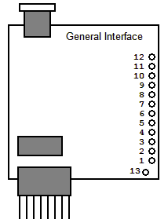
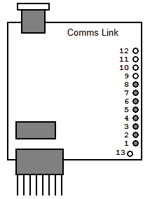
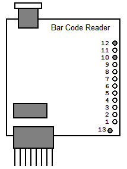
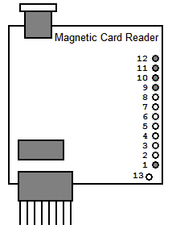
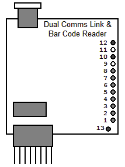
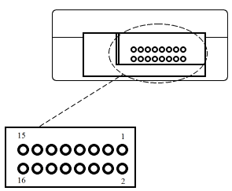
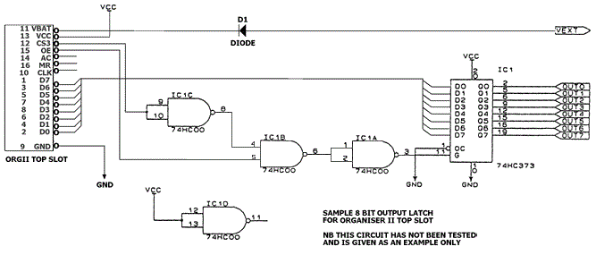

These are number of technical documents relating to the top slot of the Psion Organiser II, which were sent by Psion Technical Support to some of their customers. Note that there are references in the text to a figure 2.1 in appendix B, which is missing.
There are quite often requirements to wire your own interfaces with different bar code readers or comms cables. For that reason on the following pages the various pin allocations are shown, along with their function.
There are diagrams with all of them for ease of understanding and the following variations are shown:

| Pin 1 | GND | Ground (All) |
| Pin 2 | GND | Ground (All) |
| Pin 3 | DSR | Data Set Ready (Comms Link) |
| Pin 4 | DTR | Data Terminal Ready (Comms Link) |
| Pin 5 | RTS | Request To Send (Comms Link) |
| Pin 6 | CTS | Clear To Send (Comms Link) |
| Pin 7 | TxD | Transmit Data (Comms Link) |
| Pin 8 | RxD | Receive Data (Comms Link) |
| Pin 9 | RDD | Read Data (Magnetic Card Reader) |
| Pin 10 | RCP | Clock Pulse For Data Synchronisation (Magnetic Card Reader). Bar Code Data (Bar Code Reader) |
| Pin 11 | CLS | Card Detect (Magnetic Card Reader) |
| Pin 12 | Vcc | Supply Voltage +5 Volts (Magnetic Card Reader, Bar Code Reader) |
| Pin 13 | GND | Ground |
The above pin allocations show all of the possible usages for the various connections on
an interface board.
I have also shown Pin 13 which is the additional ground connection and is linked
to pins 1 and 2 by the same circuit. This is generally used on the Dual Interface boards
but can be used as a normal ground.

| Pin 1 | GND | Ground |
| Pin 2 | GND | Ground |
| Pin 3 | DSR | Data Set Ready (Comms Link) |
| Pin 4 | DTR | Data Terminal Ready (Comms Link) |
| Pin 5 | RTS | Request To Send (Comms Link) |
| Pin 6 | CTS | Clear To Send (Comms Link) |
| Pin 7 | TxD | Transmit Data (Comms Link) |
| Pin 8 | RxD | Receive Data (Comms Link) |
The rest of the pins are not used but pin 13 can be used for a ground. The Ground Pins 1 and 2 and Pin 13 are all linked together on the same Circuit and thus are interchangeable.

| Pin 10 | Vo | Bar Code Data |
| Pin 12 | Vcc | Power Supply +5 Volts |
| Pin 13 | GND | Ground |
None of the other pins are connected though pins 1 and 2 can also be used as the ground as they are connected to pin 13 by the same circuit.

| Pin 1 | GND | Ground |
| Pin 9 | RDD | Read Data Line (This changes to a logic "1" level when a "1" bit is read from the card). |
| Pin 10 | RCP | Clock Pulse for synchronisation of reading data (This is used to sample the data line and changes to a logic "1" when clock signals encoded on a card are detected). |
| Pin 11 | CLS | Card Detect detects presence of a card in the Swipe Reader (This goes to a logic "1" while Data is being read from the card). |
| Pin 12 | Vcc | Power Supply +5 Volts |
The other pins are not used though Pin 13 can be used for Ground as it is connected to the same circuit as pins 1 and 2 which are also Ground.

| Pin 1 | GND | Ground |
| Pin 2 | GND | Ground |
| Pin 3 | DSR | Data Set Ready |
| Pin 4 | DTR | Data Terminal Ready |
| Pin 5 | RTS | Request to Send |
| Pin 6 | CLS | Clear to Send |
| Pin 7 | TxD | Transmit Data |
| Pin 8 | RxD | Receive Data |
| Pin 10 | Vo | Bar Code Data |
| Pin 12 | Vcc | Power Supply +5 Volts |
| Pin 13 | GND | Ground |
| Pin 1 | GND | Ground. |
| Pin 2 | GND | Ground. |
| Pin 3 | DSR | Data Set Ready. |
| Pin 4 | DTR | Data Terminal Ready. |
| Pin 5 | RTS | Request to Send. |
| Pin 6 | CLS | Clear to Send. |
| Pin 7 | TxD | Transmit Data. |
| Pin 8 | RxD |
Receive Data. |
| Pin 13 | GND | Ground. |
| Pin 9 | RDD | Read Data Line (This changes to a logic "1" level when a "1" bit is read from the card). |
| Pin 10 | RCP | Clock Pulse for synchronisation of reading-data (This is used to sample the data line and changes to a logic "1" when clock signals encoded on a card are detected). |
| Pin 11 | CLS | Card Detect. Detects presence of a card in the Swipe Reader (This goes to logic "1" while Data is being read from the card). |
| Pin 12 | Vcc | Power Supply +5 Volts. |
This section specifies the maximum current drain from the top slot interface. The Current figure obtained is the highest safe limit for a bar code reader or magnetic card reader to draw. This will help in selecting suitable bar coding wands, scanners, laser guns or card readers for the Organiser Interface boards.
The total maximum current that can be drawn from the Vcc3 regulator is 150 mA when an external power supply of 10.5 Volts is used.
This figure has been determined so that no damage can occur to the Organiser II power supply providing this figure is not exceeded.
So in the case of third party companies or yourselves designing and developing your own interfaces, the following restrictions apply.
More details on how these figures are arrived at are covered on the following pages of this document, where other top slot issues are discussed.
It is my intention in this paper to give an overview of the hardware of the Organiser TOP SLOT so a reader can gain a broad understanding of its basic structure and function.
It is impossible to describe the structure of the top slot without also describing the structure of all 3 interface slots, as all are linked internally. The structure consists of an 8 bit bi-directional bus coupled with 7 control lines (3 of which are used as device selects) and 2 power lines. Figure 2.1 in appendix 2, shows a schematic circuit diagram of how the slots B, C, and the Top slot (D) are linked together in this fashion. We can divide this schematic into 3 separate sections of interest:
A) Power related lines.
B) Data related lines.
C) Control lines.
This is commonly used as the external power supply input. All the internal power lines found in the Organiser can be derived from this line. This line is isolated from the battery with a service diode. If an external supply is not used, then VB can be used as a power output.
As an output the battery voltage (minus a diode drop) will appear on this line (5.5 - 8.5 Volts dependant on battery condition).
As an input the external voltage applied should be higher than the battery to ensure no drain from the battery. However it is advised that any external power supply should also feed through a forward diode, so as to ensure no reverse current to the external source when it is powered off.
It should be noted that VB only occurs in the TOP SLOT, slots B and C have an SVPP line on pin 16, which is linked through a 21 volt regulator for use when writing to DataPaks.
This is the main power supply line to the slots, and is regulated to 5 Volts (+/- 5%), it is derived from the VB rail.
The power budget allocated for each slot is 40 mA for an unselected device and 70 mA for a selected device. (However in some cases such as the 128k datapak up to l00 mA is allowable). As only one slot is active at a time this will give 40+40+70=150 mA as a peak power drain.
SVCC is switched on and off by the PACON signal from bit 7 of processor PORT 6.
This is the 0 Volts signal ground line.
All of the lines that make up the data bus have their origins in port 2 of the HD6303X processor. The primary use of port 2 is as an 8 bit bi-directional data bus.
It can be controlled by 2 registers.......
Port 2 - DDR (Data Direction Register) at $0001
Port 2 - Data register at $0003
The DDR determines which I/O direction is to be used, (0 for input, 1 for output) only 2 bits of the DDR are used:
Bit 0 - defines the I/O direction of SD0
Bit 1 - defines the I/O direction of SD1-7
WARNING. THE DDR IS A WRITE ONLY REGISTER, NO ATTEMPT SHOULD BE MADE TO READ FROM IT.
When the Organiser is off (i.e. the processor is in standby mode) the DDR is automatically set for input. In subsequent operation this should be used as a default state, in particular the DDR should always be set to input when SVCC is turned off.
With DDR set to output, data can be set onto the bus by a write to the data register at $0003. The bus is configured as follows:
| SD0 | line from bit 0 | (pin 2 on all slots) |
| SD1 | line from bit 1 | (pin 4 on Top slot, pin 1 on B & C) |
| SD2 | line from bit 2 | (pin 6 on Top slot, pin 4 on B & C) |
| SD3 | line from bit 3 | (pin 8 on Top slot, pin 3 on B & C) |
| SD4 | line from bit 4 | (pin 7 on Top slot, pin 6 on B & C) |
| SD5 | line from bit 5 | (pin 5 on Top slot, pin 5 on B & C) |
| SD6 | line from bit 6 | (pin 3 on Top slot, pin 8 on B & C) |
| SD7 | line from bit 7 | (pin 1 on Top slot, pin 7 on B & C) |
The majority of these lines are controlled from Processor port 6, which again has one data register, and one Data direction register (DDR). The Port 6 DDR is controlled in the same way as Port 2 DDR.
These lines are defined as the slot select lines, they are controlled by bits 4,5 and 6 of Port 6 accordingly. The inactive state here is with all bits set high and thus all slots are de-selected.
Only one slot should be selected at any one time.
The AC signal from slot 3 can be used to allow an external device to turn the Organiser on. In order to activate this function, the AC signal should be pulled low by an external device. For instance the Comms link does this by use of an Open-collector npn transistor.
These remaining control lines are general purpose, they are controlled by bits 0,1,2 and 3 of processor port 6. Their use is defined by the device that is currently selected. It should be noted that SPGM is not available on slot 3.

| Pin | Signal | Description |
|---|---|---|
| 1 | SD7 | Data Bit 7 |
| 2 | SD0 | Data Bit 0 |
| 3 | SD6 | Data Bit 6 |
| 4 | SD1 | Data Bit 1 |
| 5 | SD5 | Data Bit 5 |
| 6 | SD2 | Data Bit 2 |
| 7 | SD4 | Data Bit 4 |
| 8 | SD3 | Data Bit 3 |
| 9 | GND | 0 Volts |
| 10 | SCK | Undefined Control Line |
| 11 | SVB | External Power Input / Battery Output Voltage - 0.6 Volt |
| 12 | SS3 | Slot Select 3 |
| 13 | SCVV | +5 Volts |
| 14 | AC | External On/Clear |
| 15 | SOE | Undefined Control Line |
| 16 | SMR | Undefined Control Line |
Now we have learned the basic structure of the top slot and its relation to the other Organiser slots, we can attempt to design an interface for it.
In this part of the paper we shall discuss the rules and restrictions that must be observed, and the conventions used when interfacing to the Top slot. We shall also discuss external wake up and power supplies in a deeper fashion, and lastly we shall design a sample hardware interface and assembler program to drive it.
As previously explained the top slot shares common data lines, control lines (except slot select), and supply voltage with slots B and C. (See fig 2.1 in Appendix 2)
No voltages should be present on the top slot when the slots are turned off (i.e. SVCC is at 0 volts) as permanent damage can occur.
A set of conventions have been drawn up by Psion to aid the design of hardware and software which will access the Organiser Top slot.
A conventional table of control line states has been defined, to help with top slot interfacing.
| SOE | SMR | SCK | State |
|---|---|---|---|
| 0 | 0 | 0/1 | Toggle up pack address. |
| 0 | 1 | 0 | Reset pack address. |
| 0 | 1 | 1 | Undefined for Top slot. |
| 1 | 0 | 0 | Access Top slot device. |
| 1 | 0 | 1 | Reserved for further expansion. |
| 1 | 1 | 0/1 | Access printer control latch. |
To help prevent problems when changing Control lines a routine has been defined. This is as follows...
The AC line which has its origin in the top slot can be used to as an external switch on (See previous paper),
when the AC line is driven low it has the same effect as an ON/CLEAR. However software can be used to
detect if the ON/CLEAR key has been pressed if a differentiation needs to be made.
NB. AC being driven low does not switch on the SVCC power line.
An external power supply to the Organiser should observe the following rules.
Now we have looked at all the considerations associated with interfacing to the Top slot let us now attempt to create a programme that will do this.
In this example an 8 bit latch has been created to interface with the Top slot (fig 2.2). It comprises of one 74HC373 8 bit latch, and a 74HC00 quad 2 input nand gate. In this example the outputs of the latch are un-continued but in its simplest form this latch could represent a piece of test equipment with LCD attached to the 8 outputs.
An Assembler program to write to this latch must observe all of the rules that we have previously stated. The write sequence should be as follows...
NB Waiting for a key press normally turns slots off.
Data to write is passed in Accumulator B
| psh | b | ;save data |
| lda | b,#3 | ;select Top slot |
| os | pk$setp | ;and turn on power |
| oim | CS3,POB_PORT6 | ;deselect Top slot |
| oim | 0E,POB_PORT6 | ;set SOE high |
| oim | ^xFF,POB_DD2 | ;set port 2 to output |
| pul | b | ;restore data |
| sta | b,POB_PORT" | ;Output data on port 2 |
| aim | ^C<CS3>,POB_PORT6 | ;take SS3 low |
| OIM | CS3,POB_PORT6 | ;take SS3 high |
| aim | 0,POB_DDR2 | ;set port 2 to input |
| aim | ^C<0E>,POB_PORT6 | ;take SOE low. |
| Location | Mnemonic | Address |
|---|---|---|
| Port 6 Data register | Pob_port6 | $17 |
| Port 2 Data register | Pob_port2 | $03 |
| Port 2 Data direction Register | Pob_DDR2 | $01 |

Fig 2.2.